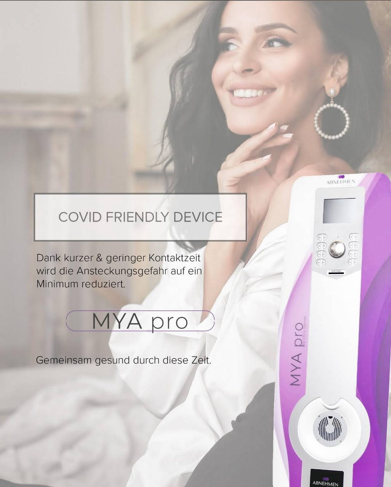
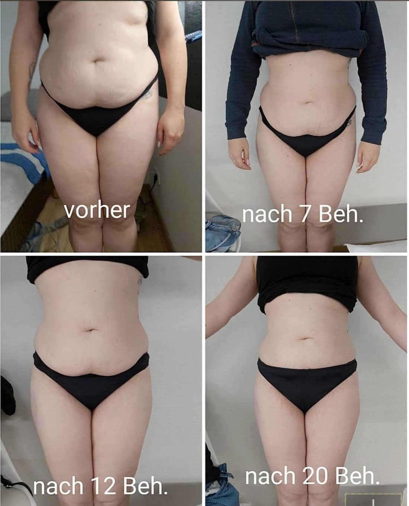
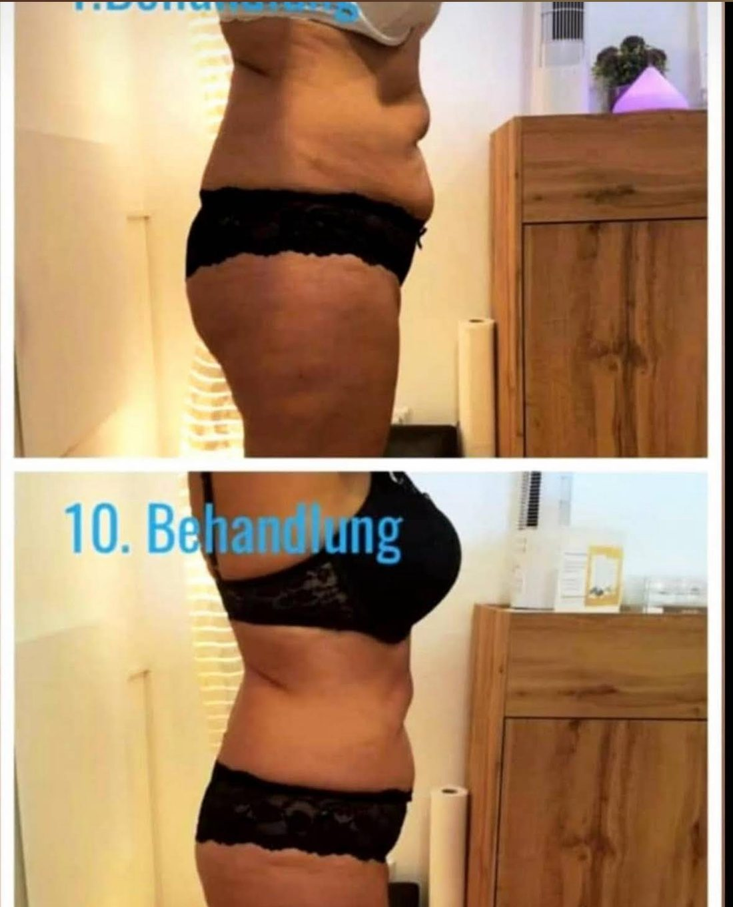
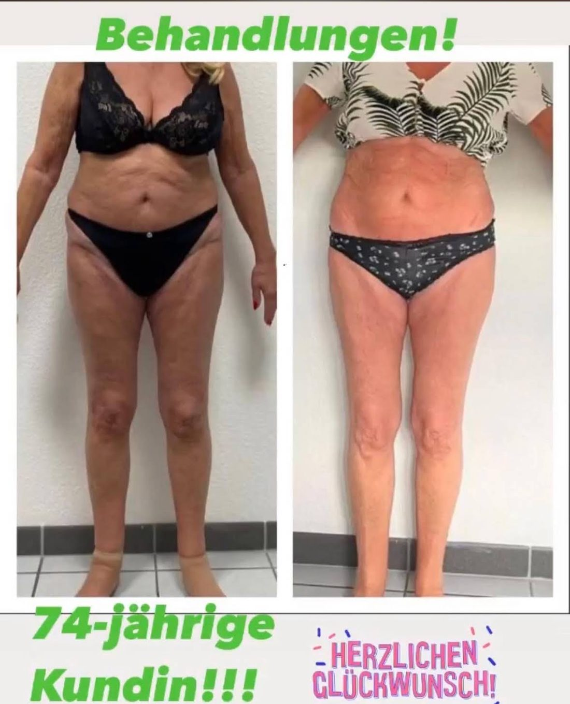
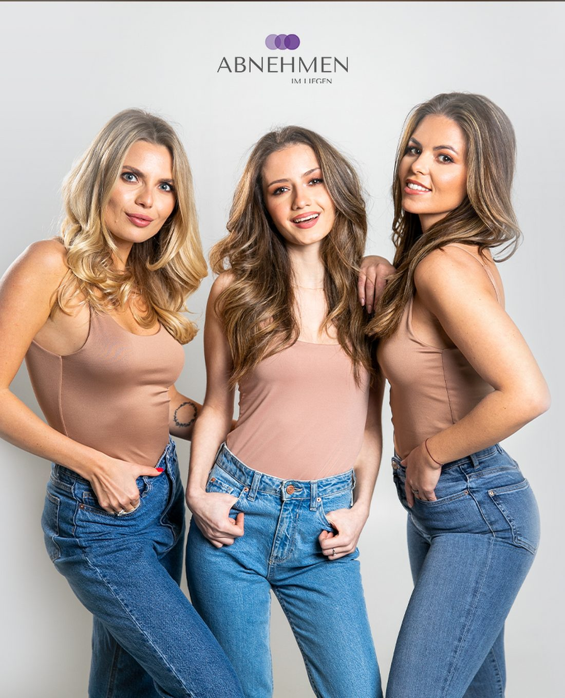

Abnehmen im Liegen
Die Klassiker-Anwendung mit MYA pro: tiefenwirksamer Ultraschall in Kombination mit Elektrostimulation, gezielt auf die Zone, die dich stört. Du liegst, das Gerät arbeitet.
Entspannt auf der Liege, während sich an Bauch, Beinen, Po und Armen etwas tut. Kein Sport, keine Hungerkur – dafür ein Plan, der zu deinem Alltag passt, und jemand, der dich dabei wirklich begleitet.
Die meisten, die zu uns kommen, haben schon einiges probiert. Diäten, die nach drei Wochen kippen. Sport, für den keine Zeit bleibt. Und dann dieses Gefühl, dass sich ausgerechnet an Bauch, Hüfte und Oberschenkeln nichts bewegt.
Abnehmen im Liegen setzt genau dort an: an den Stellen, die du dir aussuchst. Du liegst entspannt auf der Behandlungsliege, die Technik übernimmt den aktiven Teil – und wir schauen gemeinsam, dass Ernährung und Alltag mitspielen. Gemessen wird vorher und nachher, damit du schwarz auf weiß siehst, was passiert.

Ob Umfang verlieren, straffen oder den Beckenboden stärken – im Studio steht für jedes Anliegen eine eigene Technik bereit. Was zu dir passt, klären wir im Beratungsgespräch.
Die Klassiker-Anwendung mit MYA pro: tiefenwirksamer Ultraschall in Kombination mit Elektrostimulation, gezielt auf die Zone, die dich stört. Du liegst, das Gerät arbeitet.
Muskelaufbau und Fettabbau in einem: In 20 bis 30 Minuten löst das System intensive Muskelkontraktionen aus – an Bauch, Armen, Beinen oder Po. Trainingseffekt, ganz ohne Trainingsplan.
Beckenbodentraining im Sitzen – bekleidet, in 30 Minuten. Elektromagnetische Impulse lösen tausende Kontraktionen aus. Viele spüren nach drei bis sechs Terminen einen Unterschied.
Kein Verkaufsgespräch, keine Verpflichtung. Wir schauen erst einmal in Ruhe, was du erreichen willst – und ob die Methode überhaupt zu dir passt.
Wir sprechen über deine Ziele, deinen Alltag und mögliche Gegenanzeigen. Dann wird gemessen und dokumentiert – das ist dein Ausgangspunkt.
Du liegst bequem und bekleidet auf der Liege, ein Handtuch drüber. Die Anwendung dauert rund 60 Minuten und ist schmerzfrei – die meisten finden sie angenehm warm.
Damit das Ergebnis hält, gibt es ein paar einfache Regeln für die Zeit nach der Behandlung: viel trinken, in Bewegung bleiben, für ein paar Stunden auf Zucker und Alkohol verzichten. Du bekommst alles schriftlich mit.
Ein Zyklus umfasst meist zehn Behandlungen. Wir messen regelmäßig nach und passen an, wenn nötig. Du entscheidest nach jeder Etappe neu.
Fotos aus dem Studio – aufgenommen im gleichen Raum, im gleichen Licht, über mehrere Behandlungen hinweg.



Hinweis: Alle Bilder zeigen echte Kundinnen und Kunden des Studios, veröffentlicht mit ihrer Einwilligung. Ergebnisse sind individuell verschieden und hängen von Ausgangslage, Ernährung und Lebensstil ab – sie lassen sich nicht garantieren.
Über 60 Bewertungen bei Google – und fast alle mit fünf Sternen. Ein paar davon fließen hier vorbei.
„Ich war heute das erste Mal dort. Fühlte mich direkt sehr wohl. Sehr nettes und hilfsbereites Team. Jede Frage wurde sofort beantwortet und erklärt. Das Programm wird individuell auf dich abgestimmt. Ich war positiv erstaunt, wieviel an cm Umfang ich nach der ersten Behandlung verloren hatte."
„Super Ergebnisse!!! 100 % Zufriedenheit und Weiterempfehlung. Bei Frau Durakovic sind Sie in guten Händen."
„Eine wirklich gute Möglichkeit, Pfunde zu verlieren! Ich fühle mich wesentlich besser, Lebensqualität und Selbstwert werden gesteigert. Man verliert Umfang und die Kleidung sitzt wieder. Super Sache!"
„Es wirkt!"
„Danke an Suzanna, Sabrina und Leonie für den tollen Service und die weggeschmolzenen Zentimeter. Ich habe vorher noch nie von dem System gehört, aber es hat mich überzeugt. Außerdem habe ich mich sofort wohlgefühlt – man fühlt sich überhaupt nicht fremd."
„Ein sehr nettes und motiviertes Team rund um die tolle Chefin Suzanna. Nach der Hälfte der Behandlungen habe ich schon ein sehr gutes Ergebnis erzielt, sprich einiges an Zentimetern verloren."
„Seit der ersten Behandlung fühle ich mich besser. Das Ziel ist noch nicht ganz erreicht, aber ich bin auf einem guten Weg. Die Atmosphäre und die Stimmung sind IMMER mega. Ich fühle mich nachhaltig rundum wohl."
„Top Studio, top Service!"
„Suzanna ist eine liebevolle und kompetente Beraterin, die mit ihrer Energie alle ansteckt und mitreißt. Bei Abnehmen im Liegen spüre ich jedes Mal, dass mein Fettgewebe aktiviert, das Gewebe gestrafft und der Stoffwechsel angeregt wird. Das motiviert mich unheimlich!"
„Es funktioniert wirklich, man muss es ausprobieren! Natürlich muss man auch seine Ernährung anpassen. Aber es gibt Antrieb, um sein Ziel zu erreichen. Die Atmosphäre stimmt und man wird kompetent beraten. Klare Empfehlung!"
„Ich habe mich sehr gefreut, das Konzept ‚Abnehmen im Liegen' entdeckt zu haben – und es funktioniert! Vielen Dank auch an die liebe Suzana, die das alles ermöglicht hat."
Bewertungen aus dem Google-Unternehmensprofil · Zum Anhalten mit der Maus darüberfahren

Suzana Durakovic führt das Studio in Leverkusen seit vielen Jahren – und man merkt es an jedem Termin. Sie kennt die Namen, die Ziele und die Geschichten dahinter.
Genau das steht in fast jeder Bewertung: die Atmosphäre, das ehrliche Interesse, das Gefühl, willkommen zu sein. Wer hier zum ersten Mal die Tür öffnet, geht selten als Fremde wieder raus.
Kostenlos, unverbindlich und ohne Druck. Du erzählst, was du erreichen willst – wir sagen dir ehrlich, was geht.